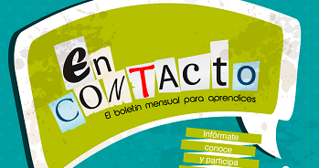

<div class="row">
    <div class="col-12">
        <div class="card">
            <div class="card-body">
                <br><br>
                <br><br><br>
                <h1 class="titleinicio text-center">Centro de diseño e innovación</h1><br>
                <h1 class="titleinicio text-center">tecnológica industrial</h1><br>
                <h2 class="text-center">Regional Risaralda</h2><br><br><br>

                <table class="table table-hover">
                    <thead>
                        <tr>
                            <th>
                                
                            </th>

                            <th>
                                
                            </th>

                            <th>
                                
                            </th>
                        </tr>
                    </thead>

                    <tbody>
                        <tr>
                            <td>
                                <h3 class="text-center">CDITI</h3>
                                <h4>Los Recursos Educativos Digitales constituyen una solución para el aprendizaje guiado en la formación en lenguas. Dichos recursos contienen ejercicios y actividades interactivas que facilitan el aprendizaje...</h4>
                                <p><a class="btn btn-info btn-block" href="https://senarisaraldadosquebradas.blogspot.com/" role="button">página recomendada</a></p>
                            </td>

                            <td>
                                <h3 class="text-center">Periodico SENA</h3>
                                <h4>Conoce nuestras ultimas publicaciones: Avansena: Noticia sobre los logros y servicios de la Entidad, Expedicion SENA: Un recorrido por los avances del SENA en norte de santander, SENA en paz: Reincorporados e instructores
                                    SENA en busqueda de un pais en paz.</h4>
                                <p><a class="btn btn-info btn-block" href="http://periodico.sena.edu.co/" role="button">página recomendada</a></p>
                            </td>

                            <td>
                                <h3 class="text-center">Biblioteca SENA</h3>
                                <h4>El SENA como la primera institución de formación para el trabajo en Colombia, desde sus inicios conformó bibliotecas en las ciudades capitales para apoyar el desarrollo de los programas de formación en los Centros.</h4>
                                <p><a class="btn btn-info btn-block" href="http://biblioteca.sena.edu.co/" role="button">página recomendada</a></p>
                            </td>
                        </tr>
                    </tbody>
                </table>

            </div>
        </div>
    </div>
</div>